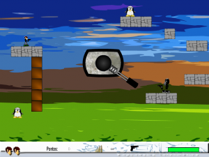

Currently Working On...
Improving the scalability and reliability of two projects' database servers August 2012
I’m investigating and applying techniques to improve the scalability and reliability of the database servers of two distinct projects.
Health project's backend skeleton August 2012
I'm creating a backend skeleton for a health project using the framework Play 2.0.
Web Sites
Personal web site August 2011
This web site.
Centro Médico de Tondela's web site August 2011
Centro Médico de Tondela - Implementation and layout. Received instructions and elements for the design.

Some Projects I Have Worked On
Projects in GitHub
DEInnovation
DEInnovation, video sharing platform in the scope of Informatics Engineering. Work developed in the scope of the Management and Innovation Processes discipline.
TV series Web Semantic app
Web Semantic TV Series, Web application on television series that implements navigation, search and recommendation using Semantic Web technologies and concepts.
Spatiotemporal Emotional Mapper
Flash Game: D-DEI
This game was not developed for the web so the music takes a while to start playing (and it might have a few other issues because of that).

First Aid Flash Simulator
This simulation should not be used for its theoretical content since it is probably inaccurate. It was created to support another project and that is why it is so crude (bear in mind it was developed in under two days and I had no incentive to develop a better looking application =)
Data Management on Mobile Devices
Development of a CRUD/Data Management Android application that runs both online and offline and handles deferred updates. Work developed in the scope of the Data Management Systems discipline.
Prototype of a Medical Center's web site back office.
Prototype of a Medical Center's web site back office in Django.
MyTwitter
Implementation of four versions of a distributed application (MyTwitter) using: Sockets and a Multithreaded Sever; JavaNIO; Java Remote Method Invocation; Java Servlets, JavaServer Pages and JavaBeans. Additionally, created and integrated a client application with twitter.com using a REST API. Work developed in the scope of the Distributed Systems discipline.